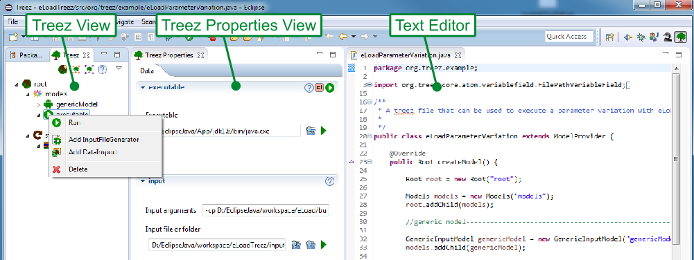

The tree model can be exported to a corresponding java code file which has to be opened in an Eclipse (e.g. Java Editor). Existing java code in a can be compiled and imported to the , too.
In addition to the , the and the , further views might be expedient to complete a custom application. The purpose of the so called (not included in he screen shot below) is to show an additional graphical representation for the tree model or for specific tree nodes. The content of the might be for example a chart or a block diagrams.
In order to edit complex tree models, the Treez concept focuses on context menus for tree nodes in the and on operations in the instead of building up a complex main menu on the top of the application window. As already explained, a distinct context menu in the will show exactly those actions which are relevant to the corresponding tree node. This is not a new idea. Nevertheless, the decision to have small main menus/tool bars and to concentrate on the tree nodes actually has a deep impact on the work flows and the way you think about your application in Treez.
The Treez concept allows you to edit a tree model withThe Treez concept could be applied to create GUIs for applications from very different domains, e.g. for a simulation tool for solar cells or for a vector drawing tool. Tree structures are very well suited to manage complexity and therefore it does not surprise that trees are a common element in complex applications. Tree structures are not the one and only way to organize the underlying elements of an application. In some cases it would for example be better to use a circular structure than a tree structure. Lets nevertheless assume that trees can be applied to model the majority of applications. The file system on your computer has a tree structure. And you might already use the tree in the Package Explorer of Eclipse to manage the source files of huge software projects.
The idea that an application can be build from underlying elements is useful to organize the application. In Treez those underlying elements are called atoms and atoms have several representations or "adaptations":
The exemplary atoms that come with Treez are thought to model a common simulation work flow. You can use the atoms to control an external executable and perform parameter variations. If you want to apply the Treez concept for a completely different application, you are welcome to do so. Please feel free to create your custom atoms. An aim of Treez is to make the creation of new atoms as easy as possible. Treez provides a set of so called attribute atoms that can be used as building block for the creation of new custom atoms. If users of Treez create new atoms and feed them back to the Treez project, a large atom library will arise with time. The extensible plugin structure of Eclipse is perfectly suited for this purpose.